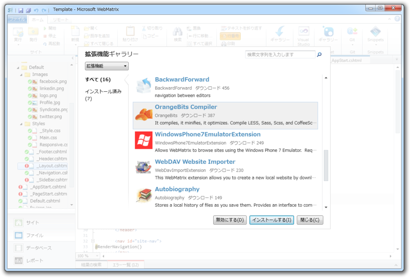
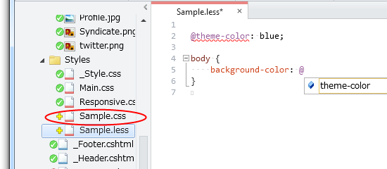
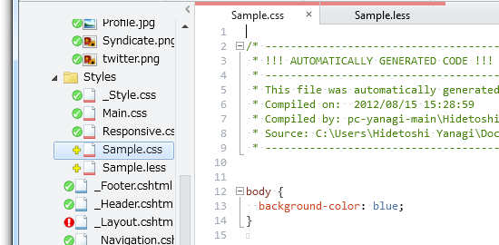
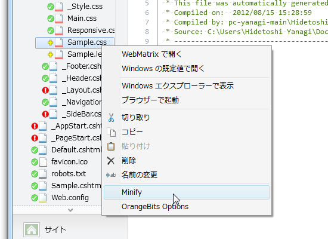
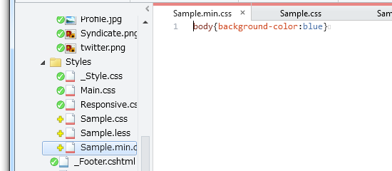

WebMatrix で LESS を使おう！
公開日：
LESS はスタイルシートで variables、mixins、operations、functions などを使えるように拡張した“The dynamic stylesheet language”です。ソースコードは“.less”ファイルに記述し、コンパイラで“.css”へ変換して利用します。変換はサーバーサイドだけでなく、 JavaScript を利用してクライアントサイドで行うことも可能*1。結局、何が言いたいかというと、大規模なスタイルシートを書く場合にあるとかんなり便利です。
「WebMatrix 2」ではこの LESS が簡単に使えるんですよネ。
まずは、［拡張機能］ボタンから「OrangeBits Compiler」をインストール。

あんまり関係ないけれど、［拡張機能］と［NuGet］は最初ちょっと混乱してしまうかもしれない。でもとりあえず、
という感じでとらえておけばいいと思う。
.less ファイルを記述
# Sample.less@theme-color: blue;
body { background-color: @theme-color; }
まずはこんな感じで .less ファイルを記述。変数（variables）が使えるので、テーマカラーの一括変更なんかが簡単に行える。

変数の入力補完が使えるのも便利！
.css ファイルへの自動コンパイル
“Sample.less”を記述すると“Sample.css”が自動生成されるので、その中身を見てみよう。

ちゃんと @theme-color 変数が blue に置き換えられているのがわかる。
/* ------------------------------------------------------------------------- * !!! AUTOMATICALLY GENERATED CODE !!! * ------------------------------------------------------------------------- * This file was automatically generated by the OrangeBits compiler. * Compiled on: 2012/08/15 15:28:59 * Compiled by: pc-yanagi-main\Hidetoshi Yanagi * Source: C:\Users\Hidetoshi Yanagi\Documents\My Web Sites\Template\Themes\Default\Styles\Sample.less * -------------------------------------------------------------------------*/body { background-color: blue; }
余計なコメントがくっついていてちょっと冗長な感じ。
.css ファイルの Minify （軽量化）
けれど、「OrangeBits Compiler」には Minify 機能もついているので大丈夫。冗長な表現を削って、ファイルのペイロード（転送する際のサイズ）を少なくしてくれる。

使い方は簡単で、コンテキストメニューから［Minify］を選択するだけ。オプションで Auto Minify 機能を利用することもできる。

“Sample.min.css”が生成され、コードがめちゃくちゃ短くなった！
LESS は変数以外にも、
- Mixins（スタイルをグループ化して置き換え、変数を渡して関数のように使うこともできる）
- Nested Rules（ルールのネスト）
- Operations（値の計算。マージンや色の計算に便利）
- Functions（値の計算に便利なビルトイン関数が最初から用意されている）
みたいな機能があるので便利。「OrangeBits Compiler」自体はほかの言語にも対応しているけれど、個人的には小規模 Web サイトでも便利なのはやっぱりこの LESS かなぁ、と思う。「WebMatrix + ASP.NET Web Pages でキレイにコーディングしたい」シリーズでも、 LESS で CSS を書いていくつもり！。